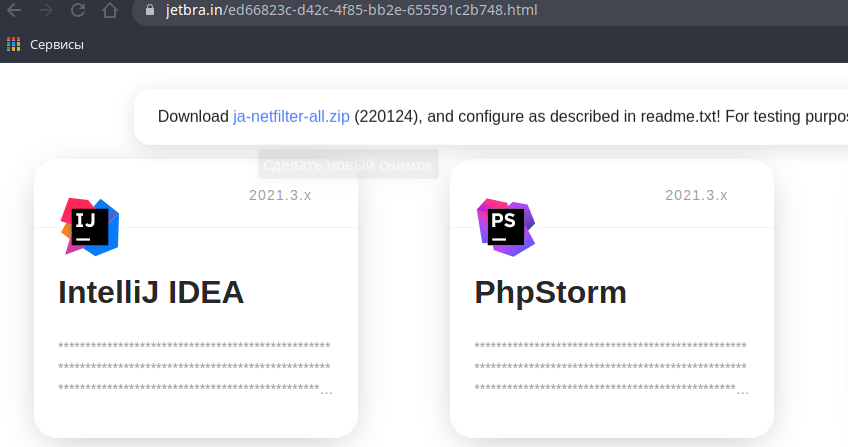

Kotlin¶
Ниже описаны особенности работы в Intellij Idea Ultimate
Среда разработки¶
Активация¶
Переходим на страницу и скачиваем файл
ja-netfilter-all.zipРаспакуем в любой каталог, но путь недолжен содержать пробелы и кириллицу. Например
/home/svyatoslav/system/jetbrains/ja-netfilter-all/Выполним генерацию конфигурации
/home/svyatoslav/system/jetbrains/ja-netfilter-all/scripts/install.shВыйдем из системы и снова залогинимся
Скопируем обновленную необходимую конфигурацию (в нашем случае для Intellij Idea Ultimate) из каталога
/home/svyatoslav/system/jetbrains/ja-netfilter-all/vmoptions/idea.vmoptionsв каталог/home/svyatoslav/.config/JetBrains/IntelliJIdea2021.3/idea.vmoptionsСкопировать из каталога
/home/svyatoslav/.config/JetBrains/IntelliJIdea2021.3/idea.vmoptionsв этот же каталог, но с именемidea64.vmoptionsОткрываем файл
/home/svyatoslav/system/jetbrains/ja-netfilter-all/config-jetbrains/mymap.confустанавливаем любой срок действия лицензии в полеEQUAL,paidUpTo->Снова открываем страницу и копируем ключь продукта (кликнуть на нужной карточке)
Открываем Intellij Idea Ultimate и вставляем ключ в поле Active Code